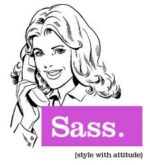

One single command
$ grunt
Compressing html...OK
Concatenating and compressing css...OK
Concatenating and compressing js...OK
...
Done, without errors.
$ _
+
 +
+
 →
→
+
→
There are lots of them
- grunt-contrib-htmlmin
- grunt-contrib-cssmin
- grunt-contrib-uglify
- grunt-contrib-imagemin
- grunt-contrib-copy
- grunt-contrib-concat
- grunt-contrib-csslint
- grunt-contrib-jshint
- grunt-contrib-less
- grunt-contrib-sass 
- grunt-contrib-coffee
- and many more!
Create the directory structure for your project *
Also copy your web files to a subdirectory
(I assume src/):
$ mkdir my-web-site
$ cd my-web-site
$ unzip ~/my-web-site.zip -d src/
$ _
Create the package.json file *
{
"name": "my-web-site",
"version": "1.0.0",
"dependencies": {},
"devDependencies": {},
"engines": { "node": ">=0.8.0" }
}
This is a standard  package.json file.
package.json file.
Install the grunt app *
grunt-cli is the command line interface.
$ npm install "grunt-cli"
npm http GET https://registry.npmjs.org/grunt-cli
npm http 304 https://registry.npmjs.org/grunt-cli
...
grunt-cli@0.1.9 node_modules/grunt-cli
├── resolve@0.3.1
├── nopt@1.0.10 (abbrev@1.0.4)
└── findup-sync@0.1.2 (lodash@1.0.1, glob@3.1.21)
$ _
Create a Gruntfile.js *
/** Gruntfile.js */
module.exports = function(grunt) {
// Project tasks configurations
grunt.initConfig({
pkg: grunt.file.readJSON('package.json')
// (C) Tasks configurations here
});
// (L) Load here grunt plugins with tasks
// (T) Add here your task(s)
grunt.registerTask('default', []);
};
You can use a Gruntfile.coffee
instead of a Gruntfile.js.
Install grunt package *
Important:
use --save-dev to automatically add
it to your package.json.
$ npm install --save-dev "grunt"
npm http GET https://registry.npmjs.org/grunt
npm http 304 https://registry.npmjs.org/grunt
...
$ _
Execute it!
$ ls
package.json
Gruntfile.js
src/
node_modules/
$ grunt
Done, without errors.
$ _
Install library tasks *
$ npm install --save-dev "grunt-contrib-connect"
Load installed task
// (L) Gruntfile.js load tasks
grunt.loadNpmTasks('grunt-contrib-connect');
Configure the webserver task
// (C) Gruntfile.js task configurations
connect: {
server: {
options: {
keepalive: true, // wait until Ctrl+C
hostname: '0.0.0.0', // allow remote conn.
port: 9003,
base: 'src/'
}
}
}
Create sequence task
// (T) Gruntfile.js tasks
grunt.registerTask('server', ['connect']);
Replace Gruntfile.js *
/** Gruntfile.js */
module.exports = function(grunt) {
// Project tasks configurations
grunt.initConfig({
pkg: grunt.file.readJSON('package.json'),
// (C) Tasks configurations here
connect: {
server: {
options: {
keepalive: true,
hostname: '0.0.0.0', port: 9003,
base: 'src/'
}
}
}
});
// (L) Load here grunt plugins with tasks
grunt.loadNpmTasks('grunt-contrib-connect');
// (T) Add here your task(s)
grunt.registerTask('server', ['connect']);
grunt.registerTask('default', []);
};Execute it!
$ grunt server
you may also try:
# Try any of these
$ grunt
$ grunt dist
$ grunt connect
Install library tasks *
$ npm install --save-dev \
"grunt-contrib-htmlmin" \
"grunt-contrib-cssmin" \
"grunt-contrib-uglify" \
"grunt-contrib-imagemin" \
"grunt-contrib-copy"
Load tasks *
// (L) Gruntfile.js load tasks
grunt.loadNpmTasks('grunt-contrib-htmlmin');
grunt.loadNpmTasks('grunt-contrib-cssmin');
grunt.loadNpmTasks('grunt-contrib-uglify');
grunt.loadNpmTasks('grunt-contrib-imagemin');
grunt.loadNpmTasks('grunt-contrib-copy');
Configure tasks *
// (C) Gruntfile.js task configurations
htmlmin: { dist: { options: {removeAttributeQuotes:true},
files: [{expand:true, cwd:'src/', src:'**/*.html', dest:'dist'}]}},
cssmin: { dist: { options: {report:'min'},
files: [{expand:true, cwd:'src/', src:'**/*.css', dest:'dist'}]}},
uglify: { dist: { options: {report:'min'},
files: [{expand:true, cwd:'src/', src:'**/*.js', dest:'dist'}]}},
imagemin: { dist: { options: {report:'min'},
files: [{expand:true, cwd:'src/', src:'**/*.{png,jpg}', dest:'dist'}]}},
copy: { dist: {
files: [
{expand:true, cwd:'src/', src:'**/*.xml', dest:'dist'},
{expand:true, cwd:'src/', src:'**/*.dwt', dest:'dist'}]}},
// ... also replace previous connect configuration
connect: { options: { hostname:'0.0.0.0' },
src: { options: { port:9003, base:'src/' }},
dist: { options: { keepalive:true,port:9004, base:'dist/' }}}
Create sequence task *
// (T) Gruntfile.js tasks
grunt.registerTask('dist', [
'htmlmin',
'cssmin',
'uglify',
'imagemin',
'copy'
]);
grunt.registerTask('server', [
'dist',
'connect:src',
'connect:dist'
]);
grunt.registerTask('default', ['server']);
Execute it!
$ grunt
Install library task *
It is included in watch task
$ npm install --save-dev "grunt-contrib-watch"
Load tasks *
// (L) Gruntfile.js load tasks
grunt.loadNpmTasks('grunt-contrib-watch');
Configure tasks *
// (C) Gruntfile.js task configurations
watch: {
options: { livereload:true },
htmls: {
files: ['src/**/*.html'],
tasks: ['htmlmin']},
images: {
files: ['src/**/*.{png,jpg,jpeg}'],
tasks: ['imagemin']},
styles: {
files: ['src/**/*.css'],
tasks: ['cssmin']},
scripts: {
files: ['src/**/*.js'],
tasks: ['uglify']},
xmls: {
files: ['src/**/*.xml'],
tasks: ['copy']},
dwts: {
files: ['src/**/*.dwt'],
tasks: ['copy']}
},
Update sequence task *
// (T) Gruntfile.js tasks
grunt.registerTask('server', ['dist',
'connect:src',
'watch'
]);